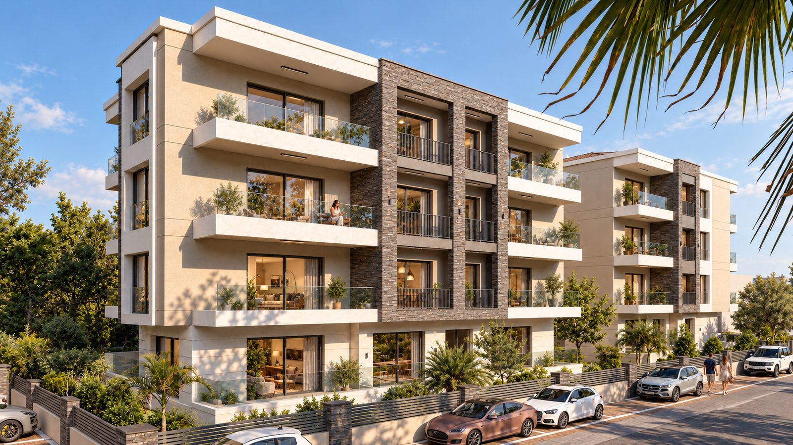
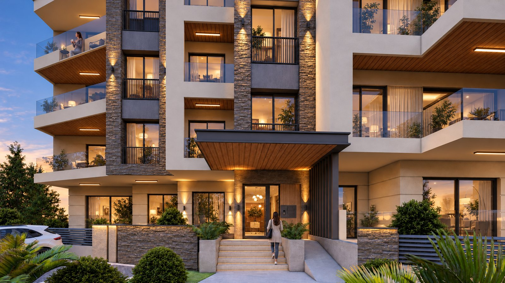

Menteşe, Muğla

CMT Yapı presents 40 homes in two blocks, with one- and two-bedroom apartment types. The official page does not state a delivery date.
APERTIS AI-enhanced views based on the developer’s project gallery.

The developer lists the project as ongoing. Confirm current progress and availability directly. Source checked 2026-10-12; availability and dates require developer confirmation.
This example is not accepting enquiries. A commissioned presentation includes the contact details and enquiry links you approve.